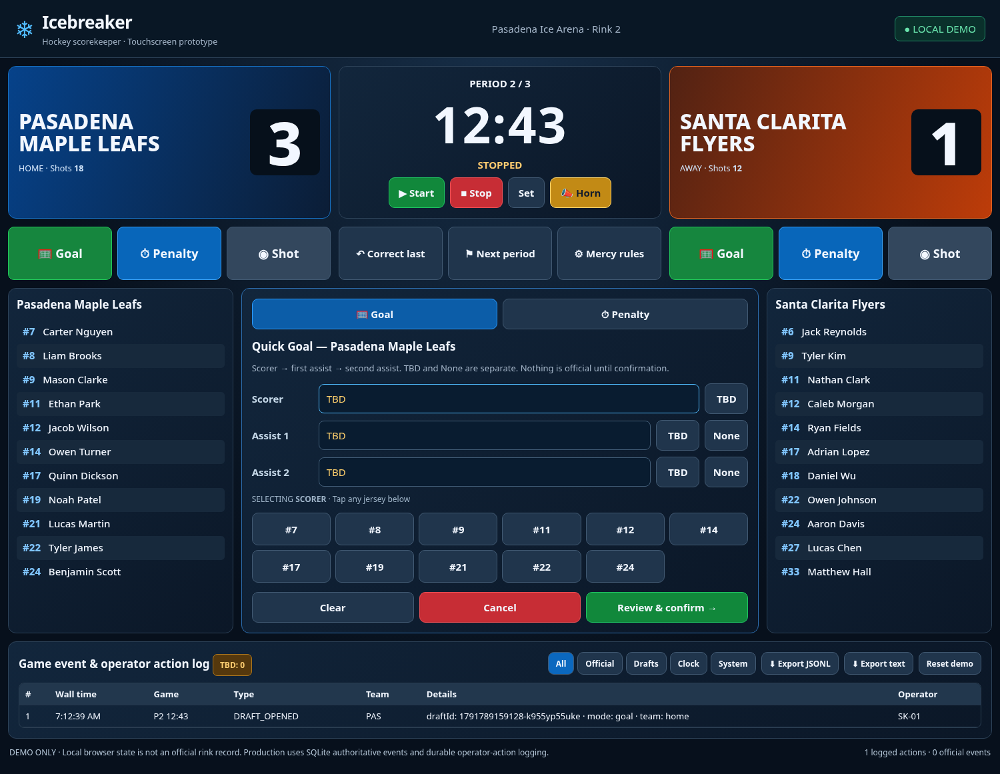

Rink scorekeeper
The rink station is the single local authority for official game operations. Use the touch-optimized interface at /operator.html.

Before the game
- Verify the matchup, game assignment, rosters, jersey numbers, current period and clock.
- Confirm the rink's official clock and mercy-rule configuration; policy changes must be logged.
- Verify audio/PA, network, export destination, and diagnostic audit-log status.
Record a goal quickly
- Select the scoring team and scorer's jersey number; TBD is allowed.
- Select assist 1 and 2 as a player, TBD (unknown), or None (no assist).
- Review the confirmation summary (team, period, time, goal/assists); choose Edit, Cancel or Confirm.
- Confirm once. The official event is journaled atomically with the sync outbox. Duplicate submit IDs must not count twice.
Correct a mistaken attribution using a new event referencing the original goal. Do not delete the initial goal or add a replacement goal.
Assess a penalty
Choose team and player, then use fast-select buttons for tripping, hooking, slashing, holding, interference or cross-checking. Confirm the infraction, classification and duration according to the league rule set before committing.
Clock and mercy
A configured lead may activate running clock on ordinary stoppages, while safety, injury and other mandatory stops still take precedence. Operator and officials retain the full actual score; rink public score display can cap the differential.
When uncertain
Record TBD instead of guessing; flag unresolved entries for official review. The operator action audit records editing and cancellation without treating them as official game events.